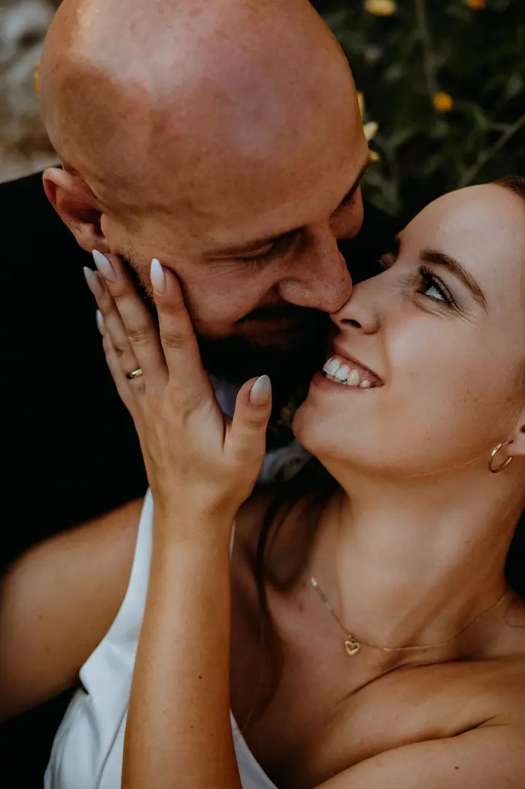
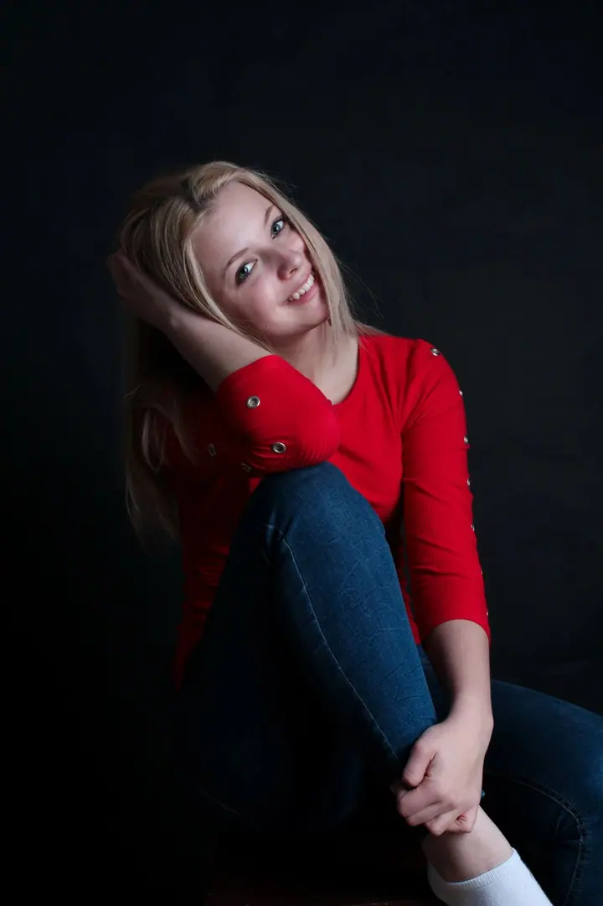
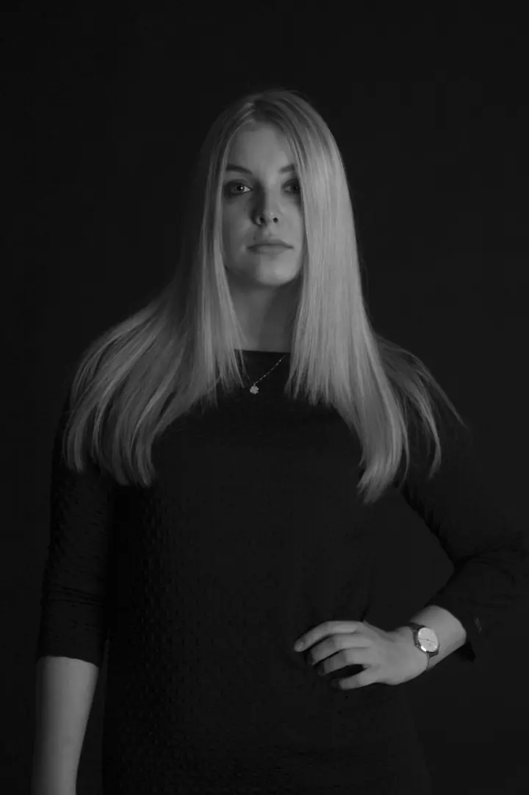
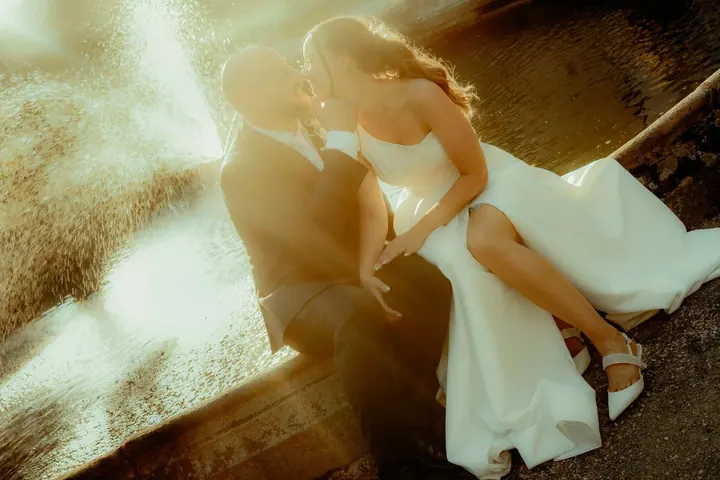

jedna
Svatby
Fotím jen obřad, půl dne nebo celý svatební den, od příprav až po večerní oslavu. Na přání nafotím i předsvatební focení, ze kterého si sami vyberete 20 až 30 fotek.

Svatební fotografka a portrétistka · Praha

Jmenuji se Julie Karvaiová a fotím svatby, portréty i koncerty. Můj web nese podtitul Zachycení duše a o to se snažím při každém focení: aby z fotek bylo cítit, jací opravdu jste.
Více o mně
Co dělám
jedna
Fotím jen obřad, půl dne nebo celý svatební den, od příprav až po večerní oslavu. Na přání nafotím i předsvatební focení, ze kterého si sami vyberete 20 až 30 fotek.
dvě
Portréty v ateliérovém světle i venku, barevně nebo černobíle. Jde mi o to, aby z fotky bylo poznat, kdo jste.
tři
Fotím koncerty, akce a reportáže. Atmosféru zachytím z pódia i z publika.
Svatební den vám můžu kromě fotek i natočit, takže si ho pak můžete znovu prožít i s pohybem a zvukem.
Vy si den prožijte, zachycení nechte na mně.

Za objektivem
Jsem fotografka z Prahy a nejvíc mě baví svatby. Ráda fotím v teplém světle zapadajícího slunce, ale stejně ráda sáhnu po černobílé, když se k atmosféře hodí víc. Kromě fotek vám můžu svatbu i natočit.
Vedle svateb fotím portréty, rodiny, těhotenská focení, reportáže a koncerty. U portrétů pracuji s tmavým pozadím a měkkým světlem, které nechá vyniknout tvář a výraz. Na koncertech se snažím zachytit energii hudby a lidí na pódiu.
Můžete si vybrat, jestli moment zachytit, nebo ho prožít. Se mnou nemusíte volit. Vy si svůj den užijte a já se postarám, aby vám z něj zůstaly fotky, ke kterým se budete rádi vracet.
Julie
Napište mi přes formulář, o jaké focení máte zájem, kdy se koná a co si přejete. Ozvu se vám s volným termínem a nabídkou.
Probereme průběh dne a vybereme rozsah focení. Kdo chce, může si dát předsvatební focení a vyzkoušet si, jaké to je stát před foťákem.
Přijedu včas a fotím nenápadně, abyste se mohli soustředit na sebe a své hosty. Když je potřeba, ráda poradím s pózováním.
Fotky upravím a předám vám je v plném rozlišení ve formátu JPEG. U celodenní svatby jich bývá 300 až 500.
Portfolio
Otázky
Samotný obřad stojí 6 000 Kč, půldenní focení na 5 až 6 hodin 9 000 Kč a celodenní focení na 7 až 9 hodin 17 000 Kč. Předsvatební focení je za 3 500 Kč.
Při celodenním focení dostanete 300 až 500 fotek v plném rozlišení JPEG. U předsvatebního focení si sami vyberete 20 až 30 fotek.
Ano, kromě fotek nabízím i svatební video. Napište mi, co si představujete, a domluvíme se na rozsahu.
Ano, kromě svateb a portrétů fotím rodinná a těhotenská focení, reportáže i koncerty. Stačí vybrat druh focení v poptávkovém formuláři.